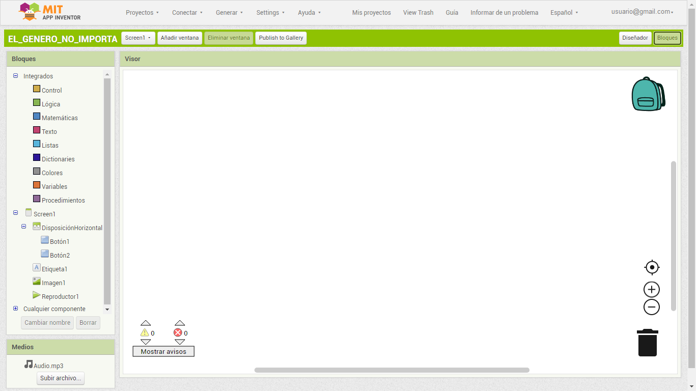

¿Estudias o programas? Controlando nuestro proyecto TyD 2º ESO
Diseñador
Diccionario
Entorno de programación (IDE)

Definición:
Es un programa para hacer aplicaciones que combina en su interfaz todo lo necesario. Su nombre completo es entorno de programación integrado que es traducción del original en inglés Integrated Development Environment (IDE).
Ejemplo:
Estoy utilizando el entorno de programación de App Inventor para poner mi horario en el móvil.
Quizás hayas programado con Scratch y conozcas su interfaz, sus bloques y sus posibilidades de combinación para crear las secuencias de instrucciones que dan respuesta a lo que quieres conseguir con el programa que quieres desarrollar.
Pero Scratch tiene sus limitaciones y necesitas un nuevo entorno de programación (IDE) para poder crear aplicaciones para dispositivos móviles. Por tanto, tienes que conocer App Inventor.
Descubrirás que no es tan difícil, ya que se parece a Scratch más de lo que en principio puedas pensar.
Para ello, vas a realizar distintas actividades que te van a ayudar a la hora de completar tu compromiso, ya que irás recorriendo el proceso general de creación de una app, que podrás aplicar a tu caso concreto.
Partiendo del objetivo de crear una sencilla app que reproduza el sonido de un anial de tu elección al pulsar sobre su imagen (si se te queda corto el reto y te atreves con algo más, podrías crear también una app que dé información acerca del papel destacado de alguna mujer en el campo de la computación y la robótica), se dividirá el proceso en dos grandes partes:
La primera estará dedicada a la definición previa y al diseño formal de la estructura de la app en App Inventor.
La segunda consistirá en la programación de la app utilizando los bloques de App Inventor.
Es un programa para hacer aplicaciones que combina en su interfaz todo lo necesario. Su nombre completo es entorno de programación integrado que es traducción del original en inglés Integrated Development Environment (IDE).
Ejemplo:
Estoy utilizando el entorno de programación de App Inventor para poner mi horario en el móvil.